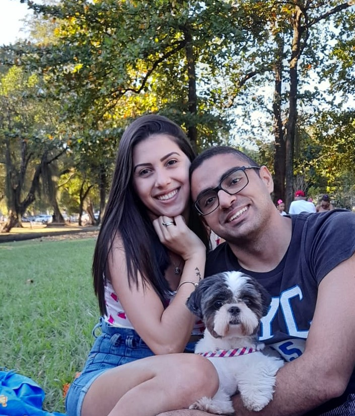

Meu nome é Luiz Gustavo, mas podem me chamar só de Gustavo. Tenho 28 anos, moro com a minha futura esposa Yanka, temos uma filha de 4 patas com o nome de Suhag. Sou interessado na área de técnologia desde adolescente, meu primeiro curso foi de montagem e manutenção de computadores e redes com 15 anos, no qual eu mesmo paguei com o dinheiro que recebi da Prefeitura do Rio de Janeiro após ter sido um dos alunos de destaque da minha escola no ensino fundamental. Sou formado em Técnico em eletrotécnica pelo SENAI, curso no qual entrei através do PRONATEC, programa do Governo Federal que custeava o curso e a passagem dos alunos. Estou me formando na faculdade de Engenharia Civil no final de 2022, faculdade essa que fiz grande parte com programas de bolsa e financiamento do Governo. A vida pra mim nunca foi fácil, na infância morei com minhas 2 irmãs e mãe em uma casa de um quarto que nem banheiro tinha, nunca tivemos grana pra nada, mas com a educação dada pela nossa mãe, fomos crescendo e a cada dia nossa vontade de mudar de situação financeira aumentava. Conseguimos reformar nossa casa, nos mudamos e hoje graças a Deus podemos dar uma vida melhor para nossa mãe.
